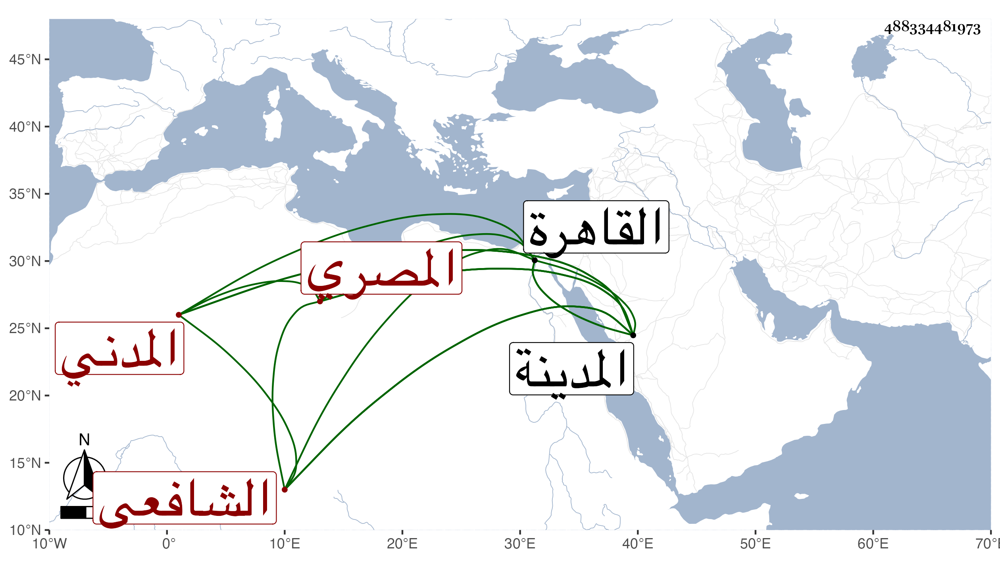

0902Sakhawi.DawLamic.ITO20230111-ara1.EIS1600.488334481973
Biography ID: 488334481973
188
محمد بن أحمد بن محمد بن محمد شمس الدين وجلال الدين أبو السعادات المصري الأصل المدني الشافعي الريس بن الريس سبط إبراهيم بن علبك المدني ووالد أحمد الماضي ويعرف قديما بابن الخطيب . ولد في ليلة الجمعة ثامن عشرى شعبان سنة سبع وثلاثين وثمانمائة بالمدينة ونشأ بها فحفظ القرآن والمنهاج والألفية وغيرهما وعرض في سنة اثنتين وخمسين فما بعدها على أبوي الفرج الكازروني والمراغي وأبي الفتح بن صالح والبدر عبد الله بن فرحون والمحب المطري والمحيوي عبد القادر بن أبي القسم المالكي وأبي القسم النويري والأمين . الأقصرائي والبدر البغدادي الحنبلي وأجازوه كلهم والسيد علي شيخ الباسطية ولم يجز وقرأ على أبي الفرج المراغي الموطأ ومسند أحمد والكتب الستة وجامع الأصول والأذكار ومعالم التنزيل للبغوي والأحياء وجملة وعلى أبي الفتح بن التقي الشفا ، وسمع بقراءة أبيه على المحب المطري البعض من الموطأ ومسند الشافعي وأبي داود وعلى أبي السعادات بن ظهيرة بعض الصحيحين وكان يقرأ الشفا في النوازل وشبهها وربما قرأه في اليوم الواحد ، ولازم الشهاب الأبشيطي حتى قرأ عليه شرح المنهاج الفرعي للمحلي والمنهاج الأصلي بحثا والعربية وغيرها وأذن له في الإقراء وعظمه جدا والشهاب بن يونس حتى أخذ عنه الحساب ، ودخل القاهرة غير مرة منها في سنة اثنتين وثمانين فاجتمع بي وأخذ عني شيئا وقرأ على الجلال البكري موضعا من الروضة وأذن له في الإقراء والإفتاء بشرط أن لا يخرج ترجيح الشيخين فان اختلف عليه ترجيحهما فلا يخرج عن ترجيح النووي . وكان ذكيا فاضلا فقيها ذا نظم متوسط امتدح به ابن مزهر وغيره وقرره خير بك من حديد في تدريس الشافعية من الدروس التي جددها بالمدينة النبوية فكان يجهد نفسه في المطالعة والتحفظ لذلك وإلقائه لجماعة الدرس بحيث انتفع به جماعة فيه ، وبيده رياسة المؤذنين بالمسجد النبوي تلقاها عن أبيه . مات في رمضان سنة ست وثمانين في الحريق الكائن بالمدينة رحمه الله وإيانا .
